GapCentral
GapCentral implements the BLE GAP central role: scanning, connecting, pairing/bonding, security configuration, and identity/privacy management. All asynchronous callbacks are delivered on GapCentralResponse.
State Constraints
Unless a method’s documentation specifies otherwise, all methods are allowed in all link-layer states. Calling a method outside its allowed states results in an assertion.
Startup
The first CurrentState(standby) message signals that the service is initialized and ready to accept method calls. No GapCentral methods may be called before this initial callback.
Recognising the Node startup boundary: on serial transports the App recognizes the Node as "started" once (1) the SESAME Init / InitResponse handshake completes (peer window open) and (2) the first CurrentState(standby) fires. On TCP transports the analogous boundary is TCP connection established followed by the same CurrentState(standby). See SESAME for details of the transport handshake.
Calling a method before the initial CurrentState(standby) callback is a contract violation and results in an assertion on the Node side. This can also happen if the Node resets unexpectedly (e.g. watchdog, power event) while the App is running: the Node re-issues its startup handshake, and any App method call issued before the App observes the new CurrentState(standby) will assert. Applications should treat every fresh CurrentState(standby) callback as a service-ready boundary and re-drive their initial configuration from that point.
Per-Method Sequence Diagrams
Standby
Allowed states: standby, scanning, initiating, connected.
Terminates the current activity (scan, initiating connection, or connected link) and returns the Node to standby. Calling from standby still yields CurrentState(standby).
SetDeviceDiscoveryFilter
Allowed states: standby.
Fire-and-forget, no response callback. Only devices matching the filter are reported via GapCentralResponse.DeviceDiscovered. The filter is scan-scoped by design (it configures the current scan session, not a persistent policy), so it self-clears when the Node transitions out of scanning, and the App normally does not need to clear it between scan sessions. An explicit SetDeviceDiscoveryFilter(filter=none) is idempotent and useful when a filter was set without ever starting a scan.
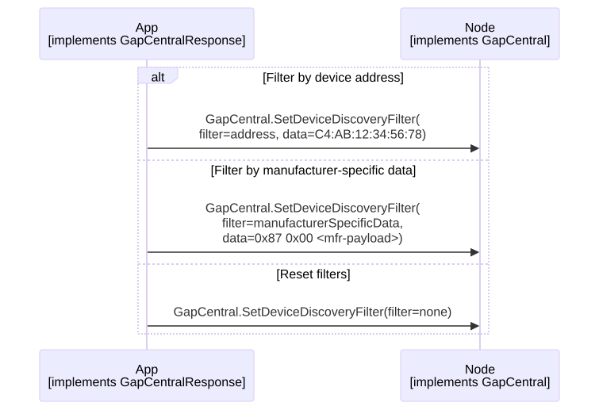
StartDeviceDiscovery
Allowed states: standby.
Pre-conditions: optional SetDeviceDiscoveryFilter to restrict reported advertisers.
Starts scanning. The Node transitions to scanning and reports each matching advertisement via DeviceDiscovered until Standby() is called.
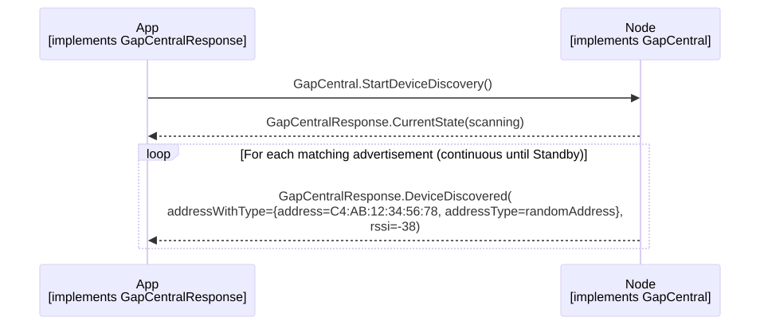
Connect
Allowed states: standby.
Pre-conditions: optional SetIdentityAddress / SetPrivacyMode (own address type used on CONNECT_IND).
Initiates a connection to a peripheral at the specified address. The Node transitions standby → initiating. If a bidirectional data exchange completes within initiatingTimeoutInMs, the Node transitions to connected. Otherwise it returns to standby.
initiatingTimeoutInMs guidance:
-
Zero means wait indefinitely (per proto).
-
Minimum practical value: several multiples of the peripheral’s advertising interval, giving the connection setup one or two connection events to complete after
CONNECT_IND. For a peripheral advertising at 100 ms, at least 300-500 ms. -
Recommended: 3000-10000 ms for interactive use cases (App is waiting on user input, so a timely failure is preferable to hanging).
-
Long-running / power-sensitive: 30000 ms and above, or zero, for cases where the App is content to wait for the peripheral to come into range.
-
Example uses 5000 ms.
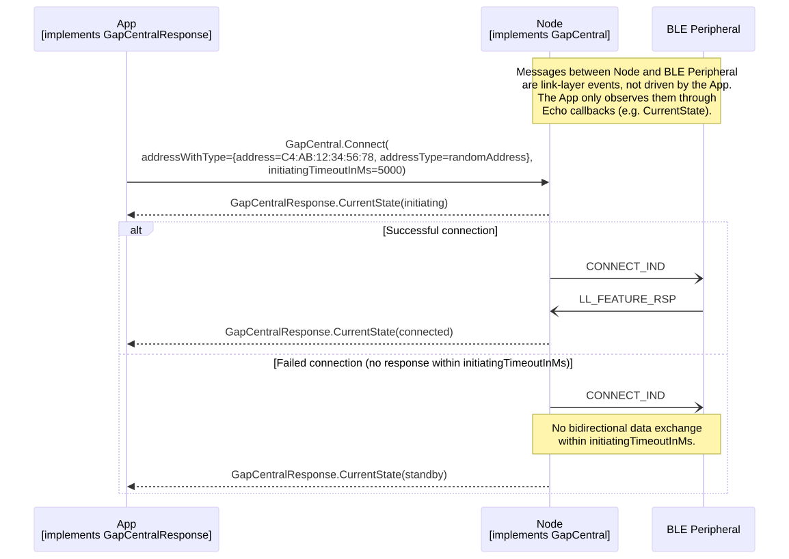
PairAndBond
Allowed states: connected.
Pre-conditions: optional SetSecurityMode and SetIoCapabilities (consumed at SMP start to select the pairing method).
Secures the connection to the currently connected peripheral. Two paths are possible:
-
No pre-existing bond - runs the LESC SMP procedure (Just Works, Numeric Comparison, or Passkey Entry depending on IoCapabilities negotiation), enables LL encryption, and stores the resulting keys as a bond.
-
Pre-existing bond - skips SMP and re-encrypts the link using the stored LTK.
If the peripheral sends a security request first, this procedure runs automatically without an explicit App call.
Response sequences:
-
Successful pairing with new bond:
AuthenticationRequired(if applicable) →NumberOfBondsChanged→PairingResult. -
Successful re-encryption with existing bond:
NumberOfBondsChanged→PairingResult. -
Pairing failure:
AuthenticationRequired(if applicable) →PairingResult(pairedSuccessfully=false). -
Peripheral-initiated disconnect during pairing:
PairingResult(pairedSuccessfully=false)→CurrentState(standby).
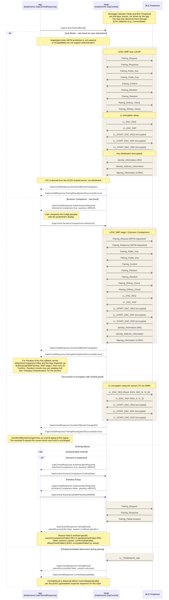
SetSecurityMode
Allowed states: standby.
Fire-and-forget, no response callback. Should be called once during initialization before any connections are made.
Security mode is a pairing-time requirement, not a Connect-time filter. Setting a required security level does not prevent the underlying Connect from succeeding. It prevents pairing from completing with peripherals whose IoCapabilities cannot satisfy the required level. Observable sequence when the peripheral cannot meet the level:
-
Connect(…)→CurrentState(initiating)→CurrentState(connected)(the connection is established normally). -
PairAndBond()(or a peripheral-initiated security request that auto-triggers PairAndBond) starts SMP negotiation. -
Central detects the peripheral’s IoCapabilities cannot satisfy the required MITM level.
-
PairingResult(pairedSuccessfully=false, reason=authenticationRequirementsNotMet). -
The link stays connected on SMP failure. The App typically calls
Standby()(or the peripheral disconnects voluntarily on receiving the SMP Pairing Failed PDU), producingCurrentState(standby)via one of those paths, not automatic on pairing failure per se.
If the App wants to reject connections to capability-mismatched peripherals up-front, it must decide before calling Connect (e.g. by inspecting scan-response data or a prior bond entry). The Node cannot pre-empt the connection based on security mode.
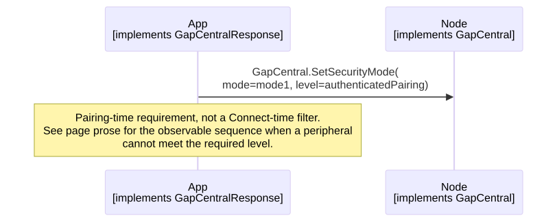
SetIoCapabilities
Allowed states: standby.
Fire-and-forget, no response callback. Should be called once during initialization before any pairing takes place. The selected capability drives the pairing method during PairAndBond (Just Works, Passkey Entry, or Numeric Comparison).
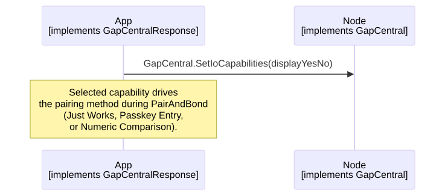
NumericComparisonConfirm
Allowed states: connected.
Pre-conditions: prior AuthenticationRequired(isNumericComparison=true). Must be called within the 30s SMP timeout (Core Spec v6.3, Vol 3, Part H, Section 3.4).
Peripheral disconnect during the confirmation pause: while the App is waiting on the user to compare the derived passkey, the SMP procedure is paused waiting on the local NumericComparisonConfirm call. If the peripheral disconnects during that pause (LL_TERMINATE_IND, LL supervision timeout, HCI-level disconnect), the App may or may not observe PairingResult(pairedSuccessfully=false) before CurrentState(standby) fires. This is not a proto imprecision. It reflects a real limitation at the BLE-stack layer: an actively-running SMP procedure typically surfaces a cancellation on disconnect, but a paused procedure has no canonical cancellation event because the stack was waiting on the local device (not the peripheral) when the disconnect arrived. Practical guidance: treat CurrentState(standby) as terminal for the ongoing pairing procedure, and do not block on PairingResult after receiving it.
The same behaviour applies to AuthenticateWithPasskey during Passkey Entry (see below).
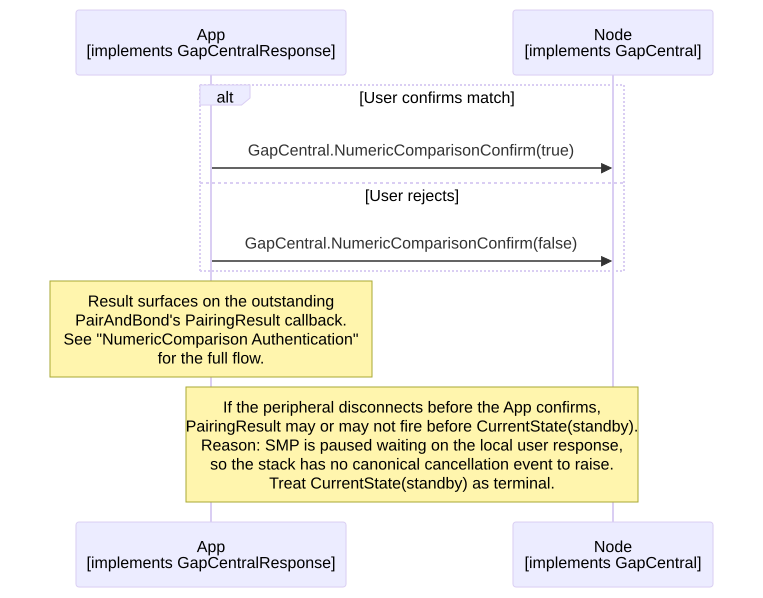
AuthenticateWithPasskey
Allowed states: connected.
Pre-conditions: prior AuthenticationRequired(isNumericComparison=false) (Passkey Entry method). Must be called within the 30s SMP timeout (Core Spec v6.3, Vol 3, Part H, Section 3.4).
Peripheral disconnect during the passkey-entry pause: same race condition as NumericComparisonConfirm above. If the peripheral disconnects while the App is collecting the passkey from the user, PairingResult may or may not fire before CurrentState(standby). Treat CurrentState(standby) as terminal.
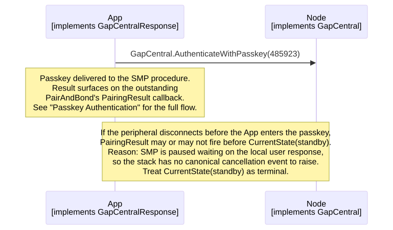
NumericComparison Authentication
Pre-conditions: connected; IoCapabilities set to displayYesNo or keyboardDisplay.
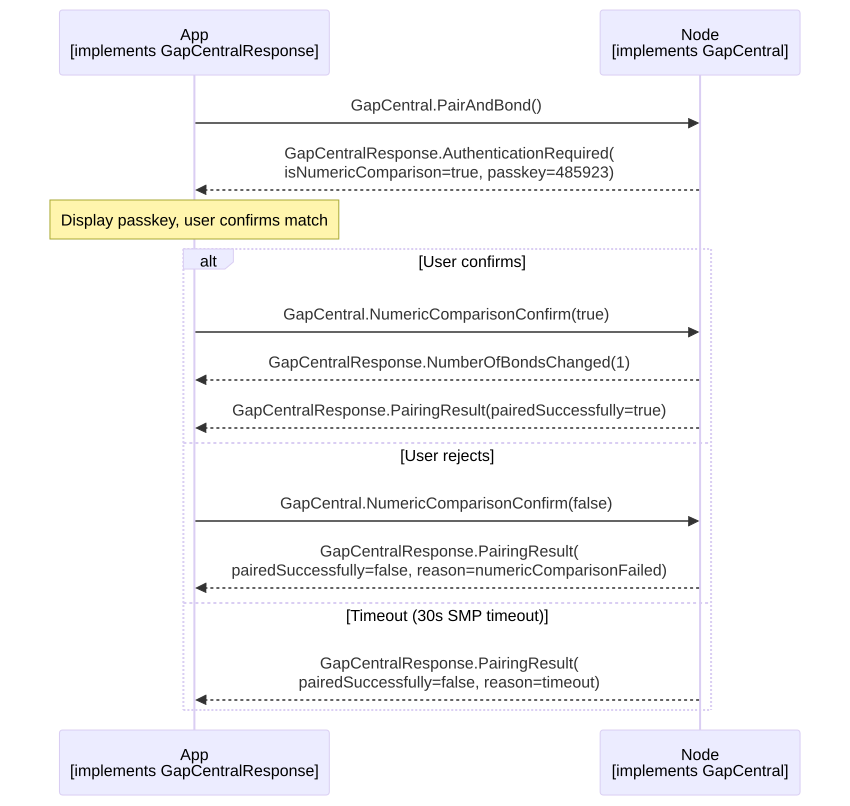
Passkey Authentication
Pre-conditions: connected; IoCapabilities set for passkey entry (display and/or keyboard).
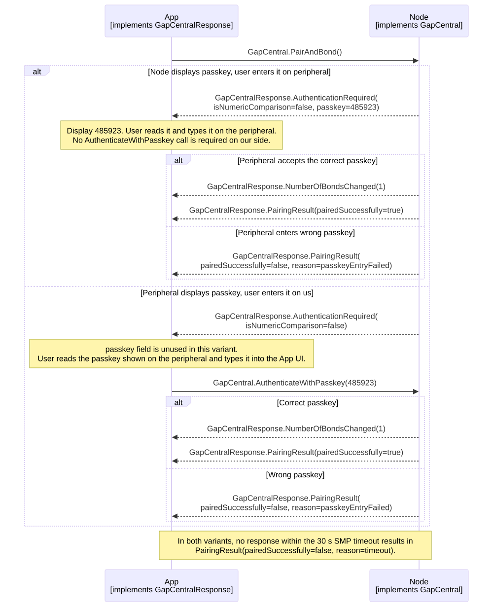
ResolvePrivateAddress
Allowed states: standby, scanning, connected, initiating.
Given a resolvable private address (RPA), returns the identity address of the bonded peripheral whose IRK produces that RPA, or reports failure if the address is not an RPA or does not match any stored bond. Works against the entire bond list without requiring an active connection to the peripheral.
Typical use case: Identify whether a device seen while scanning (which may advertise using a rotating RPA rather than its identity address) is already known / bonded, so the App can decide whether to reconnect via Connect(bond.identityAddress) or ignore the discovery. See also the Identify Bonded Device cross-service flow, which uses this method to fold RPA resolution into a discovery sweep. Since IsDeviceBonded is deprecated, ResolvePrivateAddress is the recommended way to answer "is this scanned device already bonded?" without initiating a connection.
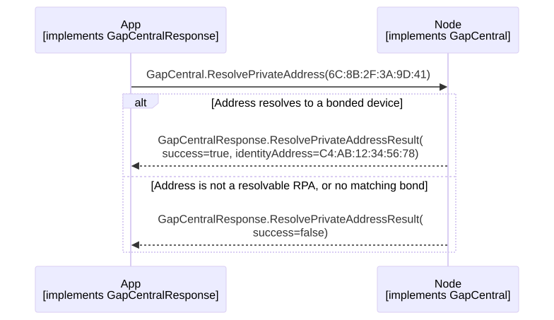
SetIdentityAddress
Allowed states: standby.
Fire-and-forget, no response callback. Sets the address the central presents as its identity. With privacy disabled the controller uses this address directly on the air. With privacy enabled the controller generates and rotates a resolvable private address on the air, but the identity address is still distributed to bonded peripherals via the SMP Identity_Address_Information PDU (Core Spec v6.3, Vol 3, Part H, Section 3.6.1) so future RPAs resolve back to the same identity.
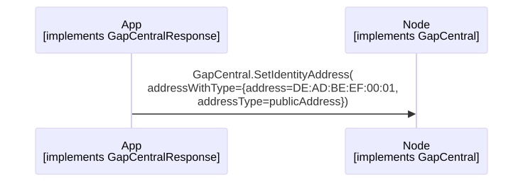
Cross-Service Sequence Diagrams
Enable Privacy
Pre-conditions: standby.
Configures the central to use resolvable private addresses (RPAs) for its own advertising / initiating.
Note the order of the two configuration calls: SetIdentityAddress first, SetPrivacyMode(true) second. The SetIdentityAddress section explains why the identity address is still relevant with privacy on: it is what the central distributes to bonded peripherals so future RPAs resolve back to a consistent identity. If SetIdentityAddress is skipped, the identity address defaults to whatever the HAL implementation chose at boot (typically a device-unique random address).
Order rationale: set the identity you want to be bonded under before enabling privacy so that any bond created afterwards captures the intended identity address, not the boot default.
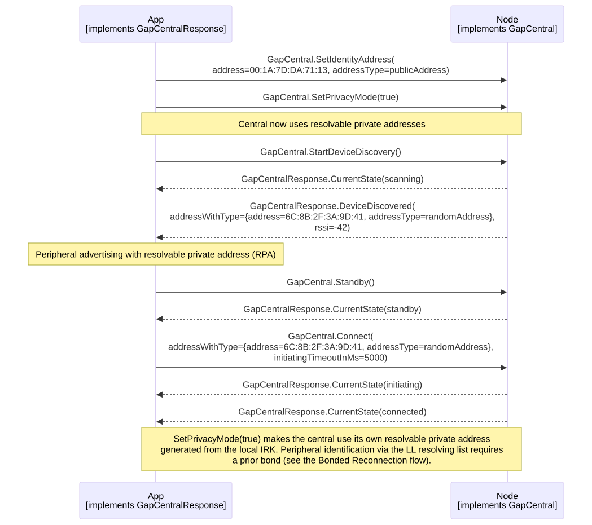
Identify Bonded Device
Scan for peripherals using resolvable private addresses (RPAs) and identify which ones are already bonded via ResolvePrivateAddress.
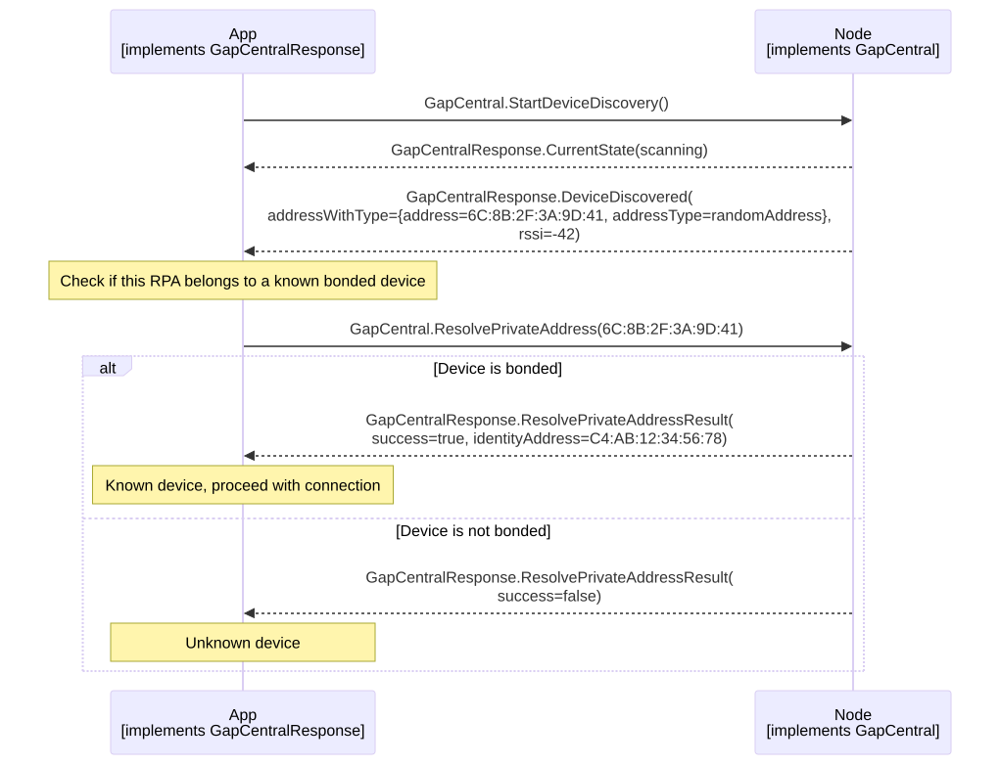
Reference
Service definition: services/ble/Gap.proto.
View Gap.proto inline
syntax = "proto3";
import "EchoAttributes.proto";
package gap;
option java_package = "com.philips.emil.protobufEcho";
option java_outer_classname = "GapProto";
// ==================================================
// GAP COMMON
// ==================================================
message Address
{
// A 48-bit Bluetooth device address, as defined in Bluetooth Core Specification v6.3, Vol 6, Part B, Section 1.3
// Encoded as a 6-byte Bluetooth device address in least-significant-octet-first order.
// Example: "AA:BB:CC:DD:EE:FF" is represented as { 0xFF, 0xEE, 0xDD, 0xCC, 0xBB, 0xAA }.
bytes address = 1 [(bytes_size) = 6];
}
message BoolValue
{
bool value = 1;
}
message UInt32Value
{
uint32 value = 1;
}
// Link layer states of a device in a Peripheral or Central role
// Peripheral role states are standby, connected and advertising.
// Central role states are standby, scanning, connected and initiating.
// Allowed transitions are as follows.
// 1. Every state can go to standby.
// 2. Every state can be entered from standby except the connected state.
// 3. Connected state can only be entered from advertising and initiating states.
// For further details refer to Bluetooth Core Specification v6.3, Vol 6, Part B, Section 1.1
message State
{
enum Event
{
standby = 0;
scanning = 1;
connected = 2;
advertising = 3;
initiating = 4;
}
Event value = 1;
}
// Based on Bluetooth Core Specification v6.3, Vol 3, Part H, Section 2.3.2
message IoCapabilities
{
enum IoCapabilitiesEnum
{
none = 0;
display = 1;
displayYesNo = 2;
keyboard = 3;
keyboardDisplay = 4;
}
IoCapabilitiesEnum ioCaps = 1;
}
// Based on Bluetooth Core Specification v6.3, Vol 3, Part C, Section 10.2
message SecurityLevel
{
enum SecurityLevelEnum
{
none = 0;
unauthenticatedPairing = 1;
authenticatedPairing = 2;
authenticatedPairingWithLE = 3;
}
SecurityLevelEnum level = 1;
}
// Based on Bluetooth Core Specification v6.3, Vol 6, Part B, Section 1.3
message AddressType
{
enum AddressTypeEnum
{
publicAddress = 0;
// Random addresses can be either static random or private (resolvable or non-resolvable).
// The subtype is encoded in the two most significant bits of the address (bits 47-46):
// 00 - Non-resolvable private: rotated periodically, cannot be resolved.
// 01 - Resolvable private (RPA): rotated periodically, can be resolved using the peer's IRK (Identity Resolving Key).
// 11 - Static random: fixed for the lifetime of the device or until a power cycle.
// See Bluetooth Core Specification v6.3, Vol 6, Part B, Section 1.3.2.
randomAddress = 1;
}
AddressTypeEnum type = 1;
}
// A Bluetooth device address and its type.
// The interpretation of 'address' depends on 'addressType':
// - publicAddress: a fixed IEEE 802-assigned address.
// - randomAddress: a random or private address (see AddressTypeEnum.randomAddress).
message AddressWithType
{
Address address = 1;
AddressType addressType = 2;
}
message PairingFailedReason
{
enum PairingFailedReasonEnum
{
// SMP Pairing Failed reason codes as defined in Bluetooth Core Specification v6.3, Vol 3, Part H, Section 3.5.5.
// Note: enum numeric values are an internal representation and are not guaranteed to match the spec's assigned error code values.
passkeyEntryFailed = 0; // The user input of passkey failed, for example, the user cancelled the operation.
oobNotAvailable = 1;
authenticationRequirementsNotMet = 2; // The pairing procedure cannot be performed as authentication requirements cannot be met due to IO capabilities of one or both devices.
confirmValueFailed = 3; // The confirm value does not match the calculated compare value.
pairingNotSupported = 4;
insufficientEncryptionKeySize = 5; // The resultant encryption key size is not long enough for the security requirements of this device.
commandNotSupported = 6; // The SMP command received is not supported on this device.
unspecifiedReason = 7; // Pairing failed due to an unspecified reason.
repeatedAttempts = 8; // Pairing or authentication procedure is disallowed because too little time has elapsed since last pairing request or security request.
invalidParameters = 9; // The Invalid Parameters error code indicates that the command length is invalid or that a parameter is outside of the specified range.
dhkeyCheckFailed = 10; // Indicates to the remote device that the DHKey Check value received doesn’t match the one calculated by the local device.
numericComparisonFailed = 11; // The numeric comparison of the passkey failed.
brEdrPairingInProgress = 12; // Indicates that the pairing over the LE transport failed due to a Pairing Request sent over the BR/EDR transport in progress.
crossTransportKeyDerivationNotAllowed = 13; // Indicates that the BR/EDR Link Key generated on the BR/EDR transport cannot be used to derive and distribute keys for the LE transport or the LE LTK generated on the LE transport cannot be used to derive a key for the BR/EDR transport.
keyRejected = 14; // Indicates that the device chose not to accept a distributed key.
// The following values are not SMP Pairing Failed reason codes.
// They represent other failure outcomes of the overall PairAndBond procedure.
// The SMP pairing procedure did not complete within the protocol timeout.
timeout = 15; // Bluetooth Core Specification v6.3, Vol 3, Part H, Section 3.4
// SMP pairing completed successfully, but enabling link-layer encryption failed afterwards.
encryptionFailed = 16;
// If the failure reason does not fit any of the above categories, this value will be used
unknown = 17;
}
PairingFailedReasonEnum reason = 1;
}
message PairingStatus
{
bool pairedSuccessfully = 1; // If false then 'reason' will indicate the failure reason.
PairingFailedReason reason = 2;
}
message BondsStatus
{
uint32 currentBonds = 1;
uint32 maxBonds = 2;
}
// Based on Bluetooth Core Specification v6.3, Vol 3, Part H, Sections 2.3.5.3 and 2.3.5.6
message AuthenticationRequest
{
// Indicates whether this is a Numeric Comparison (LE Secure Connections) or Passkey Entry pairing.
// If true: display the passkey to the user for confirmation and respond with NumericComparisonConfirm.
// If false: display or enter the passkey and respond with AuthenticateWithPasskey.
bool isNumericComparison = 1;
// The passkey to be displayed to the user.
// If isNumericComparison is true: the user confirms this value matches the one displayed on the peer device.
// If isNumericComparison is false: the user either reads this value to enter on the peer device, or is prompted to enter the passkey shown on the peer device (in which case this field is not used).
uint32 passkey = 2;
}
// ==================================================
// GAP PERIPHERAL
// ==================================================
message AdvertisementType
{
// Types defined in Bluetooth Core Specification v6.3, Vol 6, Part B, Section 2.3.1
enum AdvertisementTypeEnum
{
advInd = 0; // Connectable and scannable undirected advertising
advNonconnInd = 1; // Non-connectable and non-scannable undirected advertising
}
AdvertisementTypeEnum type = 1;
}
message AdvertisementMode
{
AdvertisementType type = 1;
// Advertising interval in units of 0.625 ms, as defined by the Bluetooth Core Specification.
// This value is used for both the minimum and maximum advertising interval, resulting in a fixed interval.
// Valid range: 0x0020 to 0x4000 (20 ms to 10.24 s).
// See Bluetooth Core Specification v6.3, Vol 4, Part E, Section 7.8.5.
uint32 advertisingInterval = 2;
}
// Data layout as per Bluetooth Core Specification v6.3, Vol 3, Part C, Section 11
message AdvertisementData
{
bytes data = 1 [(bytes_size) = 28];
}
// Data layout as per Bluetooth Core Specification v6.3, Vol 3, Part C, Section 11
message ScanResponseData
{
bytes data = 1 [(bytes_size) = 13];
}
// Configures pairing preferences: LE Secure Connections support, MITM protection, and I/O capabilities.
// Should be set once during initialization before advertising or connecting.
message SecurityPreference
{
// Based on Bluetooth Core Specification v6.3, Vol 3, Part H, Sections 2.3.1 and 2.3.5.1
enum SupportEnum
{
disabled = 0;
supported = 1;
enforced = 2;
}
// Based on Bluetooth Core Specification v6.3, Vol 3, Part H, Section 2.3.2
enum IoCapabilitiesEnum
{
none = 0;
display = 1;
displayYesNo = 2;
keyboard = 3;
keyboardDisplay = 4;
}
SupportEnum secureConnections = 1;
SupportEnum mitm = 2;
IoCapabilitiesEnum ioCapabilities = 3;
}
// ==================================================
// GAP PERIPHERAL SERVICE DEFINITION
// ==================================================
// State constraints:
// After startup this service is only available after GapPeripheralResponse.CurrentState with state standby is received.
// Unless otherwise specified, all methods are allowed in all link layer states.
// Non-conformance will result in an assertion.
// Callback constraints:
// Unless otherwise specified, methods do not by default result in any callbacks on the response service
// When a callback is specified for a method and only for that method, another call of the same method is not allowed until the callback has been received.
// When a callback is specified for more than one method, any of the associated method calls is not allowed until the callback for the previous call has been received
// Non-conformance will result in an assertion.
// Startup:
// On startup, the first CurrentState(standby) message signals that the GapPeripheral service
// is initialized and ready to accept method calls. No GapPeripheral methods shall be called
// before this initial CurrentState(standby) is received.
// ==================================================
service GapPeripheral
{
option (service_id) = 32;
// Allowed states: standby, advertising, connected
// Expected response: GapPeripheralResponse.CurrentState with current state
rpc GetState(Nothing) returns (Nothing) { option (method_id) = 1; }
// Allowed states: standby
// Expected response: GapPeripheralResponse.CurrentState with state advertising
// Pre-conditions: Optional SetAdvertisementData (payload), SetScanResponseData (scannable modes), SetSecurityPreferences and SetAllowPairing (pairing posture) before Advertise. Omitting any uses the HAL default.
// Description: If an advertisement mode is not supported by a configuration then it results in an assertion.
rpc Advertise(AdvertisementMode) returns (Nothing) { option (method_id) = 2; }
// Allowed states: standby, advertising, connected
// Expected response: GapPeripheralResponse.CurrentState with state standby
rpc Standby(Nothing) returns (Nothing) { option (method_id) = 3; }
// Description: Changes take effect on the next GapPeripheral.Advertise call.
// Maximum advertisement data length for this method is 28 bytes. Server reserves an additional 3 bytes for flags data with the flag bits 'LE General Discoverable Mode' and 'BR/EDR Not Supported' enabled.
// See Core Specification Supplement, Part A, Section 1.3
// Server will not check validity of the advertisement data and only maximum length of each field will be passed to BLE stack
// If set, the advertisement data remains in effect until it is overwritten or the device is rebooted.
// If not set by this method, server will have as advertisement data only flags field.
rpc SetAdvertisementData(AdvertisementData) returns (Nothing) { option (method_id) = 4; }
// Description: Changes take effect on the next GapPeripheral.Advertise call.
// Maximum scan response length for this method is 13 bytes. Server reserves 18 bytes for streaming service uuids. Scan Response is only possible with scannable advertisements
// Server will not check validity of the scan response data and only maximum length of each field will be passed to BLE stack
// If set, the scan response data remains in effect until it is overwritten or the device is rebooted.
// If not set by this method, server will have as scan response data only service uuids.
rpc SetScanResponseData(ScanResponseData) returns (Nothing) { option (method_id) = 5; }
// Allowed states: standby, advertising, connected
// Expected response: GapPeripheralResponse.AdvertisingAddress
// Description: When privacy is disabled, it matches the identity address; when privacy is enabled, it returns the resolvable private address generated by the BLE stack
// If GapPeripheral.Advertise was never called and the device is in standby, always returns the identity address.
// Once advertised it will return the latest advertising address
rpc GetAdvertisingAddress(Nothing) returns (Nothing) { option (method_id) = 6; }
// Allowed states: standby, advertising, connected
// Expected response: GapPeripheralResponse.IdentityAddress
// Description: The address type (public or random) is determined by the HAL implementation and is not configurable via the service.
rpc GetIdentityAddress(Nothing) returns (Nothing) { option (method_id) = 7; }
// Allowed states: standby
// Description: When a SecurityPreference is not supported by the configuration it results in an assertion
rpc SetSecurityPreferences(SecurityPreference) returns (Nothing) { option (method_id) = 8; }
// Allowed states: standby
// Description: Default is to allow pairing.
// When enabled, connection requests from all peers are accepted; when disabled, connection requests from non-bonded peers are rejected.
rpc SetAllowPairing(BoolValue) returns (Nothing) { option (method_id) = 9; }
// Allowed states: standby
// Expected response: GapPeripheralResponse.NumberOfBondsChanged
rpc RemoveAllBonds(Nothing) returns (Nothing) { option (method_id) = 11; }
// Allowed states: standby
// Expected response: GapPeripheralResponse.NumberOfBondsChanged
// Description: Oldest bond means the least recently used, i.e. connected, bonded peer.
rpc RemoveOldestBond(Nothing) returns (Nothing) { option (method_id) = 12; }
// Allowed states: standby, advertising, connected
// Expected response: GapPeripheralResponse.BondInformation
rpc GetBondInformation(Nothing) returns (Nothing) { option (method_id) = 13; }
// Allowed states: standby, connected
// Pre-conditions: A prior GapPeripheralResponse.AuthenticationRequired callback with isNumericComparison=true.
// Description: Confirms or rejects the numeric comparison in response to GapPeripheralResponse.AuthenticationRequired.
// Only valid when AuthenticationRequest.isNumericComparison is true.
// Must be called within the SMP protocol timeout (30 seconds, Bluetooth Core Specification v6.3, Vol 3, Part H, Section 3.4)
// of receiving AuthenticationRequired, otherwise pairing will fail.
// If peer disconnects before NumericComparisonConfirm, state becomes standby. PairingResult may or may not be generated
rpc NumericComparisonConfirm(BoolValue) returns (Nothing) { option (method_id) = 14; }
}
service GapPeripheralResponse
{
option(service_id) = 34;
// Expected states: standby, advertising, connected
// Description: CurrentState is triggered as a response to a method and/or invoked by BLE stack events
// Example: if GetState() is called while the device is in the connected state and the peer disconnects concurrently,
// both actions will result in a CurrentState response, however the last received CurrentState is the latest state
rpc CurrentState(State) returns(Nothing) { option(method_id) = 2; }
// Expected states: standby, advertising, connected
// Triggered by: GapPeripheral.GetAdvertisingAddress
rpc AdvertisingAddress(AddressWithType) returns(Nothing) { option(method_id) = 3; }
// Expected states: standby, advertising, connected
// Triggered by: GapPeripheral.GetIdentityAddress
rpc IdentityAddress(AddressWithType) returns(Nothing) { option(method_id) = 4; }
// Expected states: connected
// Description: Sent when a pairing/bonding procedure completes or fails.
rpc PairingResult(PairingStatus) returns (Nothing) { option (method_id) = 5; }
// Expected states: standby, connected
// Description: Triggered when a new bond is created, an existing bond is removed, or re-bonding occurs with an already bonded peer.
rpc NumberOfBondsChanged(UInt32Value) returns(Nothing) { option(method_id) = 6; }
// Expected states: standby, advertising, connected
// Triggered by: GapPeripheral.GetBondInformation
rpc BondInformation(BondsStatus) returns(Nothing) { option(method_id) = 7; }
// Expected states: connected
// Description: Sent during an active pairing/bonding procedure when user interaction is required to complete pairing.
// This will only be triggered when the negotiated pairing method requires it, which is determined by the
// I/O capabilities configured via GapPeripheral.SetSecurityPreferences
// Not all pairing methods require user interaction (e.g. Just Works will never trigger this).
// Must be responded to with GapPeripheral.NumericComparisonConfirm when AuthenticationRequest.isNumericComparison is true.
rpc AuthenticationRequired(AuthenticationRequest) returns (Nothing) { option (method_id) = 8; }
}
// DEPRECATED: Will be removed in the near future. Instead wait for CurrentState(standby) after startup
service GapPeripheralReadiness {
option(service_id) = 36;
rpc DeviceStarted(Nothing) returns(Nothing) { option(method_id) = 1; }
}
// ==================================================
// GAP CENTRAL
// ==================================================
// Based on Bluetooth Core Specification v6.3, Vol 3, Part C, Section 10.2
message SecurityModeAndLevel
{
enum SecurityLevelEnum
{
none = 0;
unauthenticatedPairing = 1;
authenticatedPairing = 2;
authenticatedPairingWithLE = 3;
}
enum SecurityModeEnum
{
mode1 = 0;
mode2 = 1;
}
SecurityModeEnum mode = 1;
SecurityLevelEnum level = 2;
}
message ConnectionParameters
{
// The address of the peripheral to connect to, as discovered during scanning (e.g. from DiscoveredDevice).
AddressWithType addressWithType = 1;
// How long the central will wait for the peripheral to respond to the connection request, in milliseconds.
// After the central sends the connection request, the peripheral may take time to process and confirm it.
// If the peripheral does not respond within this timeout, the connection attempt is aborted.
// A value of zero waits indefinitely.
// Recommended: set to at least several multiples of the peripheral's advertising interval.
uint32 initiatingTimeoutInMs = 2;
}
message AdvertisingReportType
{
// Types defined in Bluetooth Core Specification v6.3, Vol 4, Part E, Section 7.7.65.2
enum AdvertisingReportTypeEnum
{
advInd = 0; // Connectable and scannable undirected advertising
advDirectInd = 1; // Connectable directed advertising
advScanInd = 2; // Scannable undirected advertising
advNonconnInd = 3; // Non-connectable undirected advertising
scanResponse = 4; // Scan response
}
AdvertisingReportTypeEnum type = 1;
}
message DiscoveredDevice
{
// The address as received in the advertising packet. Use this address directly when connecting via ConnectionParameters.
// If the peripheral uses a resolvable private address (RPA), the controller will resolve it automatically
// after a bond has been established and the peer's IRK is stored.
AddressWithType addressWithType = 1;
// Raw advertisement data as received from the controller.
// Layout of data defined in Bluetooth Core Specification v6.3, Vol 3, Part C, Section 11
bytes data = 2 [(bytes_size) = 32];
int32 rssi = 3;
AdvertisingReportType advertisingReportType = 4;
}
message DeviceDiscoveryFilter
{
enum Filter
{
// Resets any set filters
none = 0;
// Filters on the device address (public or random). Passes if the address matches exactly.
// data: the device address to match (see Address).
address = 1;
// Filters on the full contents of the Manufacturer Specific Data field in the advertising or scan response data.
// Passes if the manufacturer specific data matches exactly.
// data: the manufacturer specific data to match, including the 2-byte manufacturer ID.
manufacturerSpecificData = 2;
// TODO: Add filter for Service UUID to allow filtering on device type/profile.
}
Filter filter = 1;
// The filter value to match against, interpreted according to the selected filter.
bytes data = 2 [(bytes_size) = 32];
}
message ResolvedPrivateAddress
{
bool success = 1; // True if the address was successfully resolved to a bond, false otherwise.
Address identityAddress = 2; // The resolved identity address
}
message Bond
{
// Identity address of the peer
AddressWithType addressWithType = 1;
// Device Name from GAP (Generic Access) service.
// Read from the peer on bond created and on every successful encryption change.
// Not unique; truncated to 32 bytes.
// Can be empty if device has an empty name, or has not been read yet.
bytes deviceName = 2 [(bytes_size) = 32];
}
message BondList
{
// Sorted by least recently used (LRU): least recently used -> most recently used.
repeated Bond bonds = 1 [(array_size) = 32];
}
// ==================================================
// GAP CENTRAL SERVICE DEFINITION
// ==================================================
// State constraints:
// After startup this service is only available after GapCentralResponse.CurrentState with state standby is received.
// Unless otherwise specified, all methods are allowed in all link layer states.
// Non-conformance will result in an assertion.
// Callback constraints:
// Unless otherwise specified, methods do not by default result in any callbacks on the response service
// When a callback is specified for a method and only for that method, another call of the same method is not allowed until the callback has been received.
// When a callback is specified for more than one method, any of the associated method calls is not allowed until the callback for the previous call has been received
// Non-conformance will result in an assertion.
// Startup:
// On startup, the first CurrentState(standby) message signals that the GapCentral service
// is initialized and ready to accept method calls. No GapCentral methods shall be called
// before this initial CurrentState(standby) is received.
// ==================================================
service GapCentral
{
option (service_id) = 33;
// Allowed states: standby, scanning, connected, initiating
// Expected response: GapCentralResponse.CurrentState with current state
rpc GetState(Nothing) returns (Nothing) { option (method_id) = 1; }
// Allowed states: standby
// Description: Only devices matching the filter will be reported via GapCentralResponse.DeviceDiscovered.
// Filters are reset automatically when scanning stops.
// An explicit SetDeviceDiscoveryFilter(filter=none) is idempotent and can be used to clear a filter that was set without ever starting a scan.
rpc SetDeviceDiscoveryFilter(DeviceDiscoveryFilter) returns (Nothing) { option (method_id) = 2; }
// Allowed states: standby
// Expected response: GapCentralResponse.CurrentState with state scanning
// Additional responses: GapCentralResponse.DeviceDiscovered for each matching device
// Pre-conditions: Optional SetDeviceDiscoveryFilter to restrict which advertisers are reported.
// Description: Starts scanning for advertising peripheral devices until Standby is called.
// It's recommended to add a DeviceDiscoveryFilter, otherwise devices might be missed due to too many being discovered.
// All configurations use a fixed scan window and scan interval of 500 ms.
// See Bluetooth Core Specification v6.3, Vol 4, Part E, Section 7.8.10
rpc StartDeviceDiscovery(Nothing) returns (Nothing) { option (method_id) = 3; }
// Allowed states: standby
// Expected response: GapCentralResponse.CurrentState
// Pre-conditions: Optional SetIdentityAddress and/or SetPrivacyMode to control the own address type used on the CONNECT_IND.
// Description: Initiates a connection to a peripheral device with the given address.
// Response Sequences:
// On successful connection establishment: standby -> initiating -> connected
// On failed connection establishment: standby -> initiating -> standby
rpc Connect(ConnectionParameters) returns (Nothing) { option (method_id) = 4; }
// Allowed states: standby, scanning, connected, initiating
// Expected response: GapCentralResponse.CurrentState with state standby
// Description: Terminates the current (or initiating) connection.
// If called while PairAndBond is in progress, GapCentralResponse.PairingResult is not guaranteed. GapCentralResponse.CurrentState(standby) is the terminal callback.
// If called while already in standby, results in GapCentralResponse.CurrentState(standby).
rpc Standby(Nothing) returns (Nothing) { option (method_id) = 5; }
// Allowed states: connected
// Expected response: GapCentralResponse.PairingResult
// Additional responses: GapCentralResponse.NumberOfBondsChanged on any successful pairing or re-encryption
// (new bond adds an entry; re-encryption updates the bond-aging state with the count unchanged),
// GapCentralResponse.CurrentState with standby if device disconnected,
// GapCentralResponse.AuthenticationRequired if user interaction is required during pairing
// Description: Secures an existing connection.
// If the peripheral sends a security request, this procedure is triggered automatically.
// 1. If there is no pre-existing bond, then pairing, encrypting, and bonding (storing the keys) will take place.
// 2. If there is a pre-existing bond, then the connection will be encrypted using the existing keys.
// Pre-conditions: Optional SetSecurityMode and SetIoCapabilities (both consumed at SMP start to select the pairing method).
// Response Sequences:
// On successful pairing with new bond: GapCentralResponse.AuthenticationRequired (if applicable) -> GapCentralResponse.NumberOfBondsChanged -> GapCentralResponse.PairingResult
// On successful re-encryption with existing bond: GapCentralResponse.NumberOfBondsChanged -> GapCentralResponse.PairingResult
// On pairing failure: GapCentralResponse.AuthenticationRequired (if applicable) -> GapCentralResponse.PairingResult
// On peer-initiated disconnect during pairing: GapCentralResponse.PairingResult -> GapCentralResponse.CurrentState(standby)
rpc PairAndBond(Nothing) returns (Nothing) { option (method_id) = 6; }
// Allowed states: standby
// Description: Configures the minimum security mode and level required for connections.
// Should be called once during initialization before any connections are made.
// If the connected peripheral does not meet the required security level, the PairAndBond procedure fails with PairingResult(pairedSuccessfully=false, reason=authenticationRequirementsNotMet).
// The link stays connected on SMP failure; the App must call Standby (or wait for the peer to disconnect) to reach CurrentState(standby).
// The Connect procedure itself is unaffected: the link reaches CurrentState(connected) regardless of capability match.
// Security mode is a pairing-time requirement, not a Connect-time filter.
rpc SetSecurityMode(SecurityModeAndLevel) returns (Nothing) { option (method_id) = 7; }
// Allowed in link layer states: standby
// Configures the I/O capabilities of this device, used to determine the pairing method during PairAndBond.
// Should be called once during initialization before any pairing takes place.
// The selected capabilities influence which pairing method is chosen (e.g. Just Works, Passkey Entry, or Numeric Comparison).
rpc SetIoCapabilities(IoCapabilities) returns (Nothing) { option (method_id) = 8; }
// Allowed states: connected
// Pre-conditions: A prior GapCentralResponse.AuthenticationRequired callback with isNumericComparison=false (Passkey Entry method).
// Description: Provides the passkey entered by the user in response to GapCentralResponse.AuthenticationRequired.
// Only valid when AuthenticationRequest.isNumericComparison is false.
// Must be called within the SMP protocol timeout (30 seconds, Bluetooth Core Specification v6.3, Vol 3, Part H, Section 3.4)
// of receiving AuthenticationRequired, otherwise pairing will fail with PairingFailedReason.timeout
// Influences GapCentralResponse.PairingResult response of PairAndBond.
// If peer disconnects before AuthenticateWithPasskey is called, state becomes standby. GapCentralResponse.PairingResult may or may not be generated in that case.
rpc AuthenticateWithPasskey(UInt32Value) returns (Nothing) { option (method_id) = 9; }
// Allowed states: connected
// Pre-conditions: A prior GapCentralResponse.AuthenticationRequired callback with isNumericComparison=true.
// Description: Confirms or rejects the numeric comparison in response to GapCentralResponse.AuthenticationRequired.
// Only valid when AuthenticationRequest.isNumericComparison is true.
// Must be called within the SMP protocol timeout (30 seconds, Bluetooth Core Specification v6.3, Vol 3, Part H, Section 3.4)
// of receiving AuthenticationRequired, otherwise pairing will fail with PairingFailedReason.timeout
// Influences GapCentralResponse.PairingResult response of PairAndBond.
// If peer disconnects before NumericComparisonConfirm is called, state becomes standby. GapCentralResponse.PairingResult may or may not be generated in that case.
rpc NumericComparisonConfirm(BoolValue) returns (Nothing) { option (method_id) = 10; }
// Allowed states: standby
// Expected response: GapCentralResponse.NumberOfBondsChanged
// Description: Removes all stored bonds.
rpc RemoveAllBonds(Nothing) returns (Nothing) { option (method_id) = 11; }
// Allowed states: standby
// Expected response: GapCentralResponse.NumberOfBondsChanged
// Description: Removes the bond associated with the given identity address.
rpc RemoveBondWithAddress(AddressWithType) returns (Nothing) { option (method_id) = 12; }
// Allowed states: standby, scanning, connected, initiating
// Expected response: GapCentralResponse.ResolvePrivateAddressResult
// Description: Resolves a resolvable private address to the identity address of an already bonded device.
// Will only succeed if the address is a resolvable private address and the device is bonded.
// Useful to identify whether a device seen during scanning is already bonded, without needing to connect first.
rpc ResolvePrivateAddress(Address) returns (Nothing) { option (method_id) = 13; }
// Allowed states: standby, scanning, connected, initiating
// Expected response: GapCentralResponse.BondListReceived
// Description: Returns the list of bonded devices.
rpc GetBondList(Nothing) returns (Nothing) { option (method_id) = 14; }
// Allowed states: standby
// Description: Sets the local identity address used by the central.
// The address type may be public or random.
// When privacy mode is disabled the controller uses this identity address directly on the air.
// When privacy mode is enabled the controller generates and rotates a resolvable private address on the air, but the identity address is still distributed to bonded peers via the SMP Identity Address Information PDU (Core Spec v6.3, Vol 3, Part H, Section 3.6.1) so future RPAs resolve back to the same identity.
// Call SetIdentityAddress before enabling privacy or creating new bonds so bonded peers store the intended identity.
rpc SetIdentityAddress(AddressWithType) returns (Nothing) { option (method_id) = 15; }
// Allowed states: standby
// Pre-conditions: When enabling, call SetIdentityAddress first so future bonds capture the intended identity.
// Description: Enables or disables use of a resolvable private address for the central.
// When enabled, the controller generates and rotates the private address automatically based on the local IRK.
// When disabled, the central uses its configured identity address.
rpc SetPrivacyMode(BoolValue) returns (Nothing) { option (method_id) = 16; }
// DEPRECATED: Will be removed in the near future.
// Expected response: GapCentralResponse.DeviceBonded
rpc IsDeviceBonded(AddressWithType) returns (Nothing) { option (method_id) = 17; }
}
service GapCentralResponse {
option(service_id) = 35;
// Expected states: standby, scanning, initiating, connected
// Triggered by: GapCentral.GetState, GapCentral.StartDeviceDiscovery, GapCentral.Connect, GapCentral.Standby, GapCentral.PairAndBond, BLE stack events (e.g. peer-initiated disconnect)
// Description: CurrentState is triggered as a response to a method and/or invoked by BLE stack events
// Example: if GetState() is called while the device is in the connected state and the peer disconnects concurrently,
// both actions will result in a CurrentState response, however the last received CurrentState is the latest state
rpc CurrentState(State) returns (Nothing) { option (method_id) = 1; }
// Expected states: scanning
// Triggered by: GapCentral.StartDeviceDiscovery (continuously, for each matching device)
// Description: Reports a discovered advertising device. Only devices matching the configured DeviceDiscoveryFilter are reported.
// If device is put in Standby, DeviceDiscovered will always arrive before CurrentState(standby)
rpc DeviceDiscovered(DiscoveredDevice) returns (Nothing) { option (method_id) = 2; }
// Expected states: connected
// Triggered by: GapCentral.PairAndBond (during pairing, when negotiated pairing method requires user interaction)
// Description: Requests user interaction during an active pairing procedure.
// This will only be triggered when the negotiated pairing method requires it, which is determined by the I/O capabilities configured via GapCentral.SetIoCapabilities
// Not all pairing methods require user interaction (e.g. Just Works will never trigger this).
// Must be responded to with GapCentral.NumericComparisonConfirm when AuthenticationRequest.isNumericComparison is true,
// or GapCentral.AuthenticateWithPasskey when AuthenticationRequest.isNumericComparison is false.
rpc AuthenticationRequired(AuthenticationRequest) returns (Nothing) { option (method_id) = 3; }
// Expected states: connected, standby
// Triggered by: GapCentral.PairAndBond (on completion or failure of the pairing procedure)
// Description: Reports the outcome of a PairAndBond procedure.
// If PairingStatus.pairedSuccessfully is false, PairingFailedReason indicates the cause.
// PairingResult is always emitted before CurrentState(standby) when a peer-initiated disconnect occurs during pairing.
// If Standby() is called during pairing, PairingResult may not be emitted.
rpc PairingResult(PairingStatus) returns (Nothing) { option (method_id) = 4; }
// Expected states: standby, scanning, initiating, connected
// Triggered by: GapCentral.ResolvePrivateAddress
// Description: Returns the result of a private address resolution attempt.
// If successful, contains the resolved identity address of the bonded device.
rpc ResolvePrivateAddressResult(ResolvedPrivateAddress) returns (Nothing) { option (method_id) = 5; }
// Expected states: standby, connected
// Triggered by: GapCentral.RemoveAllBonds, GapCentral.RemoveBondWithAddress, GapCentral.PairAndBond
// Description: Reports the current number of stored bonds.
// Fires when a new bond is added, an existing bond is removed, and on successful re-encryption
// of an already-bonded connection. In the re-encryption case the reported count is unchanged;
// the callback carries a bond-aging (LRU) update rather than a change in count.
rpc NumberOfBondsChanged(UInt32Value) returns (Nothing) { option (method_id) = 6; }
// Expected states: standby, scanning, initiating, connected
// Triggered by: GapCentral.GetBondList
// Description: Returns the list of bonded devices.
rpc BondListReceived(BondList) returns (Nothing) { option(method_id) = 7; }
// DEPRECATED: Will be removed in the near future.
rpc DeviceBonded(BoolValue) returns (Nothing) { option (method_id) = 8; }
}